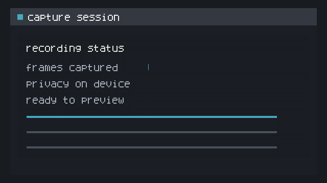
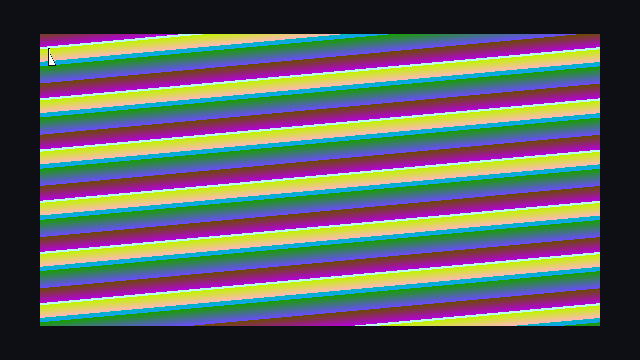

gif encoder visual review samples
representative looping benchmark outputs at native 640×360 size. compare each pair at 1× playback.
mostly static ui

15,311 bytes · 640×360

30,017 bytes · 640×360
high motion, gradient, and cursor

5,792,443 bytes · 640×360

9,524,098 bytes · 640×360
please judge the approved quality floor
- text remains legible at native size.
- cursor edges stay clear.
- gradients show no distracting banding or flicker.
- differences visible only at 2× are acceptable.
these are samples, not a final release test or encoder selection. see the README for SHA-256 provenance and links to the complete benchmark evidence.